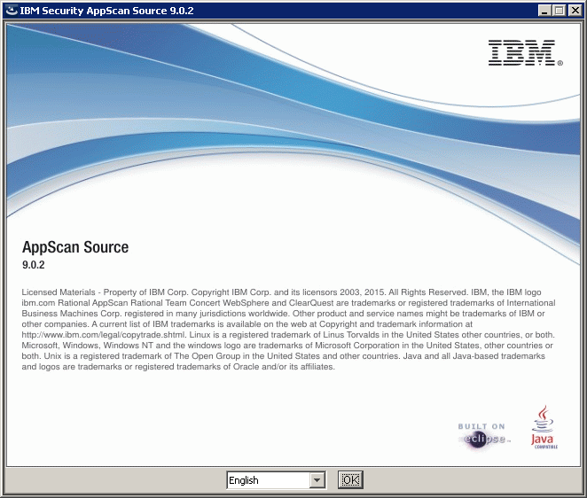
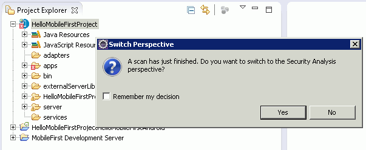
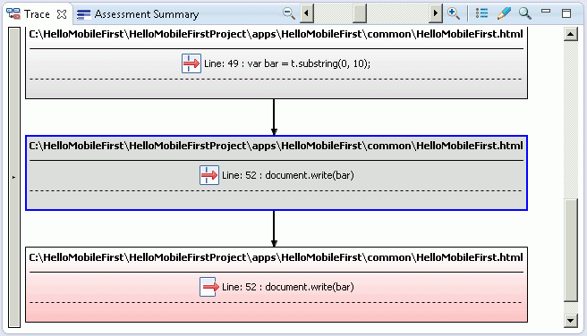
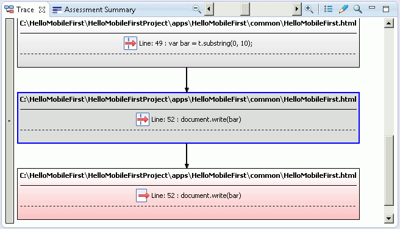

Overview
Identify and fix security vulnerabilities in your MobileFirst (6.3 - 7.1) projects early in the software development lifecycle, thereby reducing risks and lowering support costs for your mobile apps. MobileFirst Application Scanning assesses native client-side Android and iOS source code, in addition to most user-written JavaScript client-side code. (MobileFirst Application Scanning does not scan server-side JavaScript code, such as MobileFirst adapter code.)
Jump to:
Introduction
IBM MobileFirst Application Scanning scans your MobileFirst projects and assesses them for security vulnerabilities. MobileFirst Application Scanning supports native client-side Android and iOS source code, in addition to most user-written JavaScript client-side code. MobileFirst Application Scanning does not scan server-side JavaScript code such as MobileFirst Adapter code.
To learn how to download MobileFirst Application Scanning, see:
http://www.ibm.com/support/docview.wss?uid=swg24037819
Note that MobileFirst Application Scanning is also referred to as the AppScan Source for Development Eclipse plug-in.
Installing IBM MobileFirst Application Scanning to IBM MobileFirst Platform Foundation
The IBM Security AppScan Source installer is used to install MobileFirst Application Scanning.
In the installer, MobileFirst Application Scanning is called AppScan Source for Development.
After installing MobileFirst Application Scanning, you need to install it into the Eclipse development environment that you have installed MobileFirst Platform Foundation on.
Install the AppScan Source for Development Eclipse plug-in
- In the first installation panel, choose the national language that you want to have appear in the remaining installation panels:

- After clicking Next in the Welcome panel, choose to install the AppScan Source for Development for Eclipse, RAD, MobileFirst component in the Component Selection panel:

- The remaining installation panels are self-explanatory:
- In the Installation Target Specification page, specify the installation directory.
- In the language pack selection panel, choose the language packs to install. When you install a language pack, the AppScan Source user interface will display in that language when it runs on an operating system that is running that locale.
- Review and accept the terms of the license agreement and then click Next to continue.
- Review the summary of installation options before proceeding. If you are satisfied with your installation choices, click Install.
- In the Installation Complete panel, you can initiate product activation immediately after exiting the installation wizard by selecting Launch IBM Security AppScan Source License Manager. Click Done to complete the standard installation and exit the Installation Wizard.
- In the License Manager utility:
- To apply a license file, click Import and then browse to your downloaded AppScan Source license.
- To apply a floating license, click Configure license servers and then click Add. Enter the information for the host machine that contains the floating license.
Install the AppScan Source for Development Eclipse plug-in into Eclipse
- The application of the AppScan Source for Development Eclipse plug-in depends on the application of some Eclipse tools (the Graphical Editing Framework (GEF) and Draw2d). Ensure that these are installed before proceeding.
- In the Eclipse to which you have installed MobileFirst Platform Foundation, select Help > Install New Software:

- In the Install dialog box Available Software page, click Add and then, in the Add Site dialog box, specify a name for the update site in the Name field:

- Follow these instructions for adding a site in the Add Repository dialog box, depending on your operating system:
- Windows and Linux: Click Local. In the Browse for Folder dialog box, navigate to the AppScan Source installation. Click OK to return to the Add Site dialog box and then click OK to add the update site.
- OS X: In the Location field, enter
file:/Applications/AppScanSource.app/ and then click OK to add the update site.
- Select the check box next to the IBM Security AppScan Source Security Analysis Feature local site and then click Next:

- The remaining pages are self-explanatory:
- In the Install Details page, review the item to be installed and then click Next.
- Review and accept the terms of the license agreement and then click Finish.
- When prompted, restart Eclipse. The Security Analysis menu appears after the installation completes.
Scan your MobileFirst project
If you are scanning an IBM MobileFirst project that contains files that have been modified, you must rebuild the project using IBM MobileFirst before scanning.
You can launch a scan of your workspace or a selected project from the Security Analysis menu:
 You can also launch a project scan from its context menu:
You can also launch a project scan from its context menu:
 Individual applications can also be scanned:
Individual applications can also be scanned:
 You can also scan the android, ipad, and iphone environments:
You can also scan the android, ipad, and iphone environments:
 If you are running MobileFirst Application Scanning on OS X, you can also scan the Xcode project beneath the ipad or iphone environments.
In order to scan the ipad or iphone environments, or any Xcode project beneath one of those environments, the project for the iOS device must be built a single time in Xcode. In Xcode, open the project and choose iOS Device as the active scheme. Then invoke Product > Build For > Profiling.
You can even scan individual files:
If you are running MobileFirst Application Scanning on OS X, you can also scan the Xcode project beneath the ipad or iphone environments.
In order to scan the ipad or iphone environments, or any Xcode project beneath one of those environments, the project for the iOS device must be built a single time in Xcode. In Xcode, open the project and choose iOS Device as the active scheme. Then invoke Product > Build For > Profiling.
You can even scan individual files:

Open the findings in MobileFirst Platform Foundation
When the scan completes, you can open the results right in MobileFirst Platform Foundation:

The Security Analysis perspective in the AppScan Source for Development Eclipse plug-in offers a variety of views that allow you to explore and triage security findings.
Explore the findings
The Findings view displays all of the security vulnerabilities that were discovered during the scan:
 From the Findings view, you can open the finding in the code editor, exclude findings, modify findings, view findings with different groupings, and search the findings for specific items.
Some views, such as the Vulnerability Matrix and Assessment Summary views, allow you to get an overall picture of all findings. You can also filter findings from these views:
From the Findings view, you can open the finding in the code editor, exclude findings, modify findings, view findings with different groupings, and search the findings for specific items.
Some views, such as the Vulnerability Matrix and Assessment Summary views, allow you to get an overall picture of all findings. You can also filter findings from these views:
 When a finding is selected in the Findings view, the Remediation view provides context-specific intelligence for the vulnerability. The view tells you what the vulnerability is, why it is insecure, how to fix it, and how to avoid it in the future:
When a finding is selected in the Findings view, the Remediation view provides context-specific intelligence for the vulnerability. The view tells you what the vulnerability is, why it is insecure, how to fix it, and how to avoid it in the future:
 Other views allow you to:
Other views allow you to:
- Edit findings.
- Create, edit, and apply filters, allowing you to streamline the list of findings.
- Display excluded, modified, and fixed findings.
- Create and modify custom findings.
- Display search results.
- Organize findings according to a variety of audit reports that measure compliance with software security best practices and regulatory requirements.
Open finding details in the trace view
Notice in the Findings view that there is a Trace column. If that column contains a trace icon, you can select the finding to open it in the Trace view:
 Double-clicking the finding opens the tainted data flow in the Trace View. Double-click any node to see the related source code.

Double-clicking the node allows you to view the source code that is causing the vulnerability – and fix it in place:
Double-clicking the finding opens the tainted data flow in the Trace View. Double-click any node to see the related source code.

Double-clicking the node allows you to view the source code that is causing the vulnerability – and fix it in place:
 Hover help in the editor reveals a cross-site scripting vulnerability in this line of code:
Hover help in the editor reveals a cross-site scripting vulnerability in this line of code:

View the vulnerability in the source code and fix it in place
The line of code exposed by the trace is vulnerable to a cross-site scripting attack because unsanitized input from a third party is echoed back to the web page without first properly sanitizing the data. In this case, the data is the dName variable, which is completed by a third party or customer. If left unmitigated, this vulnerability could allow an attacker to run malicious JavaScript on the customer’s device.
To resolve this problem, simply use an HTML sanitization routine, such as window.escape(). Or, if you are using a framework like JQuery, sanitize with $.text().
For more information about IBM MobileFirst Application Scanning, see the user documentation at:
http://www.ibm.com/support/knowledgecenter/SSS9LM_9.0.2/com.ibm.rational.appscansrc.developer.doc/topics/eclipse_intro_mobilefirst.html
To learn about IBM Security AppScan Source for Development (Eclipse plug-in) system requirements, see:
http://www.ibm.com/support/docview.wss?uid=swg27027486